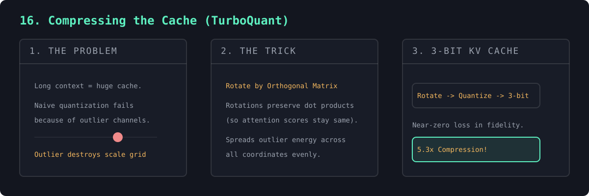

At long context the KV cache — not the weights — is the memory wall. Google's TurboQuant (ICLR 2026, arXiv:2504.19874) shrinks it to ~3 bits/value with near-zero loss. The obstacle is outlier channels; the trick is to rotate each vector by a random orthogonal matrix before quantizing — preserving dot products (so attention scores are unchanged) while spreading the outliers so few bits suffice.
Shown honestly: a rotation only helps heavy-tailed data, so on our tiny near-Gaussian model it's neutral — but on the outlier structure real LLMs have, rotate-then-quantize cuts error 1.8× and lifts attention fidelity from 0.67 → 0.85, at 5.3× compression.
Since cache memory is proportional to bits-per-value, low-bit quantization shrinks it directly. But per-tensor low-bit quantization fails on heavy-tailed data: a few outlier coordinates stretch the min–max range, forcing every ordinary value onto a coarse grid. Real transformer K/V are full of such outlier channels.
TurboQuant's trick is to rotate each vector by a random orthogonal (or Hadamard) matrix before quantizing. A rotation preserves lengths and — crucially — inner products, so attention scores are unchanged if queries are rotated the same way; meanwhile, by concentration of measure, it spreads the outliers' energy across all coordinates, eliminating them so low bits quantize cleanly. PolarQuant plus a residual-correction stage reaches ~3 bits, ~6× smaller and ~8× faster. The honest caveat (shown in the output): a Gaussian is rotation-invariant, so the trick only helps when outliers actually exist — which, in real models, they do.

=== Why outliers matter: rotation only helps heavy-tailed data === tiny model's real keys: near-Gaussian -> rotation ~neutral === With realistic outlier channels (ratio 21) === key reconstruction error @ 3-bit: naive quantization : 0.566 rotate-then-quantize : 0.313 (1.8x lower) attention-output fidelity vs fp (cosine sim): naive quantization : 0.6658 rotate-then-quantize : 0.8502 memory: fp16 16 bits -> 3-bit = 5.3x smaller
"""
#16 in the "NN to tiny LLM" ladder. (compressing the KV cache, TurboQuant-style)
#15 gave us a KV cache. At long context lengths that cache — not the weights —
becomes the memory bottleneck (it grows with every token). The fix is to store
it in fewer bits. This is what Google Research's TurboQuant does (ICLR 2026,
arXiv:2504.19874): it compresses the KV cache to ~3 bits/value with almost no
quality loss — ~6x smaller, ~8x faster attention.
The obstacle, and the trick:
PROBLEM: real K/V vectors have OUTLIER CHANNELS — a few coordinates with huge
magnitude. With one shared scale, naive low-bit quantization is forced to span
those outliers, so every ordinary value collapses onto a coarse grid.
TRICK (TurboQuant's PolarQuant stage): ROTATE each vector by a random
orthogonal matrix before quantizing. A rotation preserves lengths and dot
products (so attention scores are unchanged if you rotate queries the same
way), while smearing the outliers across all coordinates — so the rotated
vector quantizes cleanly. Quantize it, store it, rotate back on read.
IMPORTANT / HONEST NOTE: a rotation only helps when outliers exist. A purely
Gaussian tensor is rotation-invariant, so the trick does nothing for it. Our
tiny Shakespeare model is too small to develop strong outliers (we measure this
below), so we demonstrate the mechanism on a key matrix carrying the outlier
structure that real, larger LLMs are documented to have.
Run with: python 16_kv_quant.py (requires modern_gpt.pt from running #14 first)
"""
import importlib.util
import os
import torch
import torch.nn.functional as F
spec = importlib.util.spec_from_file_location("modern_gpt", "14_modern_gpt.py")
mg = importlib.util.module_from_spec(spec)
spec.loader.exec_module(mg)
DEVICE = mg.DEVICE
tg = mg.tg
torch.manual_seed(0)
BITS = 3 # TurboQuant's headline precision
def quantize(x, bits=BITS):
"""Per-tensor affine quantize to `bits` bits, then dequantize. One shared
(min, scale) — the regime where a single outlier wrecks precision."""
qmax = 2 ** bits - 1
lo, hi = x.min(), x.max()
scale = (hi - lo) / qmax
return torch.round((x - lo) / scale) * scale + lo
def random_orthogonal(d):
"""Random orthogonal matrix via QR (stands in for TurboQuant's fast
randomized Hadamard transform — same length/dot-product preservation)."""
q, _ = torch.linalg.qr(torch.randn(d, d, device=DEVICE))
return q
def rel_error(approx, exact):
return ((approx - exact).norm() / exact.norm()).item()
def cos_sim(a, b):
return F.cosine_similarity(a.flatten(), b.flatten(), dim=0).item()
def outlier_ratio(x):
return (x.abs().max() / x.abs().mean()).item()
@torch.no_grad()
def real_keys(model):
"""Real keys from layer 0, head 0 of the trained #14 model."""
ids = torch.tensor([tg.encode(tg.text[2000:2040])], device=DEVICE)
T = ids.shape[1]
h = model.blocks[0].attn_norm(model.token_emb(ids))
a = model.blocks[0].attn
k = mg.apply_rope(
a.k_proj(h).view(1, T, mg.N_KV_HEAD, mg.HEAD_DIM).transpose(1, 2),
model.cos[:T], model.sin[:T])
return k[0, 0] # (T, head_dim)
def attention(q, k, v):
scores = (q @ k.transpose(-2, -1)) / mg.HEAD_DIM ** 0.5
return F.softmax(scores, dim=-1) @ v
if __name__ == "__main__":
if not os.path.exists(mg.CKPT_PATH):
raise SystemExit("No modern_gpt.pt — run `python 14_modern_gpt.py` first.")
model = mg.ModernGPT().to(DEVICE)
model.load_state_dict(torch.load(mg.CKPT_PATH, map_location=DEVICE)["model"])
model.eval()
d = mg.HEAD_DIM
R = random_orthogonal(d)
k_real = real_keys(model)
print("=== Why outliers matter: rotation only helps heavy-tailed data ===")
print(f"our tiny model's real keys — outlier ratio (max/mean |k|): "
f"{outlier_ratio(k_real):.1f} (near-Gaussian)")
print(f" naive {BITS}-bit error : {rel_error(quantize(k_real), k_real):.3f}")
print(f" rotated {BITS}-bit error: {rel_error(quantize(k_real @ R) @ R.T, k_real):.3f}"
f" (rotation ~neutral — nothing to fix)\n")
# Emulate the outlier-channel structure that real, larger LLMs exhibit:
# a handful of coordinates carry very large magnitude.
T = k_real.shape[0]
k = torch.randn(T, d, device=DEVICE) * 0.4
v = torch.randn(T, d, device=DEVICE) * 0.4
q = torch.randn(T, d, device=DEVICE) * 0.4
for ch in (3, 11, 19): # outlier channels
k[:, ch] *= 14
v[:, ch] *= 14
print(f"=== Now with realistic outlier channels (ratio {outlier_ratio(k):.0f}) ===")
k_naive, k_rot = quantize(k), quantize(k @ R) @ R.T
e_naive, e_rot = rel_error(k_naive, k), rel_error(k_rot, k)
print(f"key reconstruction error @ {BITS}-bit:")
print(f" naive quantization : {e_naive:.3f}")
print(f" rotate-then-quantize : {e_rot:.3f} ({e_naive / e_rot:.1f}x lower)\n")
# End-to-end attention output (rotate q & k together -> scores preserved).
ctx_fp = attention(q, k, v)
ctx_naive = attention(q, quantize(k), quantize(v))
scores_rot = ((q @ R) @ quantize(k @ R).transpose(-2, -1)) / d ** 0.5
ctx_rot = (F.softmax(scores_rot, dim=-1) @ quantize(v @ R)) @ R.T
print(f"attention-output fidelity vs fp (cosine sim, higher is better):")
print(f" naive quantization : {cos_sim(ctx_naive, ctx_fp):.4f}")
print(f" rotate-then-quantize : {cos_sim(ctx_rot, ctx_fp):.4f}\n")
print(f"=== Memory === fp16 = 16 bits/value; {BITS}-bit -> {16/BITS:.1f}x smaller")
print("\nThat's TurboQuant in miniature: a cheap rotation spreads the outliers")
print("so aggressive low-bit KV-cache quantization stays accurate. Real")
print("TurboQuant adds a fast Hadamard transform + a residual-correction stage")
print("to reach ~6x compression and ~8x faster attention at scale.")